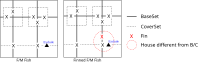
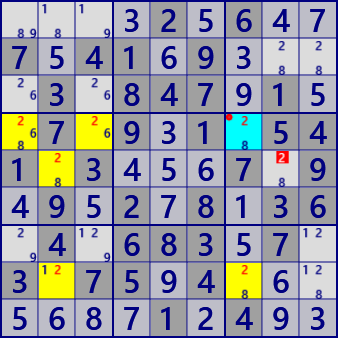
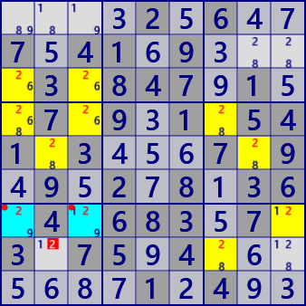
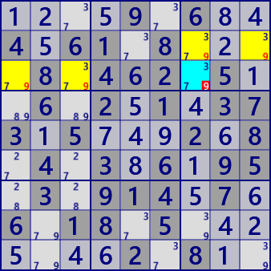

Endo Fins/Cannibalism
Endo Fins/Cannibalismの理解には、
Fish、
Finned Fish、
Franken/Mutant Fish、
BaseSet/CoverSet
を十分に理解していることが必要です。
Franken/MutantFishでは、”BaseSetとCoverSetのそれぞれのHouse群は重なりがない”の条件がついていました。
ここではこの条件を緩めます。（⇒Cannibalism）
Endo Fin Fish
Endo Finsは、BaseSetを構成するHouse群に重なりがある場合です。
N次Fishについて、N個のHouse群がBaseSetを構成し、これに対応するN個のHouse群がCoverSetとなっているとします。
BaseSetのHouse群が重なるので、必然的に行・列・ブロックが混在するFranken/Mutantタイプです。
BaseSetの重なり部分のセルをEndo Finsといいます。
EndoFinは真であり、EndoFinを除外するセル・候補数字(以下で説明する条件あり）は偽となります。
(1)Fish（基本Fish、BaseSet/CoverSetに重なりはない）

【左図】
- 【左図】N次Fishを考えます。Fishを構成するセルは、それぞれがBaseSetのHouseに含まれます。(BaseSetはFishの完全被覆）
"Fishを構成するセル群(Fishセル群)"が先にあって、これを完全被覆するBaseSet(N個のHouse群)を求めるのが順序ですが、 実際にはN個の重なりのないHouse群を求めて、これをFishとしてももよいでしょう。 - CoverSetは、BaseSet="Fishセル群" を完全に被覆するN個のHouse群です。 また、CoverSetのどれかのHouseに含まれ、Fishセル群に含まれないセル▲ があるとします。
- Fishを構成するセルには、位置は決まらないが、Fish内のどこかに真値のセルがあります（Lockedの状態）。 BaseSetを構成するそれぞれのHouseは、1つずつ真を含みます（真値のセルを含み）。 CoverSetを構成するそれぞれのHouseは、1つずつ真（真値のセルを含み）を含みます。 Fish全体で真はN個あります。
- Fishに含まれないセル▲が真とすると、対応するCoverSetのHouseでは 真 を含まなくなります。
これにより、CoverSetの真は(N-1)個になります。これはあり得ないので、セル▲は偽となります。
- Fin付きN次Fishを考えます。通常のFishに、BaseSetに含まれ CoverSetに含まれないセル
（X:Finセル）が付加する状態です。
- CoverSetは、Fishを構成する全てのセル含むとします。また、Fishに含まれないセル▲があるとします。
- セル▲とFinセルが同じHouse(BseSet、CoverSetのいずれのHouseとも異なる）があるとします。 セル▲が真とすると、Fishを被覆するCoverSetが1個減ります。 つまり、CoverSetには(N-1)個の真しかないことになります。よって、セル▲は偽となります。 （最初の部分『セル▲とFinセルが同じHouseに属するとき』は、Finが複数あり、また異なるHouseに属することもあるので、 『セル▲が全てのFinをスコープしているとき』の方が分かり易いでしょう。）
(2)Franken/Mutant Fish（F/M Fish)

- 基本Fishの BaseSet/CoverSetが、行/列または列/行の構成であるのに対し、 Franken/Mutant Fishは、BaseSetとCoverSetには、行・列・ブロックが混在します。 行・列・ブロックのどのような組み合わせでもFishの論理が成立します。
- (1)通常のFish の説明でも、図は列/行ですが、Fishアルゴリズムの説明文の中には行と列は含んでいません。 また、ブロックもHouseであることから、Franken/Mutant Fishが成立します。
(3)Endo Fin Fish

- 【左図】N次F/M FishでBaseSetに重なりがあるケースを考えます。 重なり部分のセルXをEndo Finと呼びます。
- CoveSetのEndoFinセルを含むHouseに属し、かつBaseSetに属さないセル▲は偽です。 これが真とすると、このHouseにはFish構成セルの真はないことになり、 残りの (N-1)個のCoverSetのHouseにN個の真を配置することはできません。
- 【右図】Fin付きのN次F/M FishでBaseSetに重なりがあるケースです。
- セル▲が全てのFin（通常のFinとEndoFin）をスコープしているとき、セル▲は偽です。
なお、この場面にはLocked Pair、Finned Xwing、Finned SwordFish、Finned JellyFish、Skyscraper、 EmptyRectangl、W Wing、Coloring Wrap、Remote Pair、ALS-XZ、ALS XY-Wing、Als Death Blossom、 ALS Chainの解もあり、数独を解く上ではこれらの解法で間に合うので、Endo Fin Fishを見ることは少ないでしょう。 逆に言うと、Endo Fin Fishは様々な解法の裏にある基本的な原理の11つなのでしょう。

Franken/Mutant SwordFish with Endo Fin
Digit: #2
BaseSet: r4 c27
CoverSet: r8 b46v
Endo Fin: r4c7

Franken/Mutant JellyFish with Endo Fin
Digit: #2
BaseSet: r257 c2
CoverSet: c89 b47
Endo Fin: r5c2

Franken/Mutant JellyFish with Endo Fin
Digit: #2
BaseSet: r7 c2 b69
CoverSet: r5 c79 b7
Endo Fin: r7c9

Franken/Mutant Squirmbag with Endo Fin
Digit: #2
BaseSet: r57 c137
CoverSet: r3 b4679
Endo Fin: r7c13
Paste the next 81 digits onto the grid and solve with /Solve/MultiSolve/
....2.6..7.41.9....3.847.1..7.9.1.541.3...7.9.9.2.8.36.4.683.7.3.75.4.......1.4..
(4)Cannibalism
- N次F/M FishでCoverSetに重なりがあるケースを考えます。 これをCannibalistic セル(X)とよびます。
- Cannibalistic セルは偽です。これが真とする、CoverSetのN個のHouseには真のFish構成セルの真が(N-1)個しか含まれません。

Cannibalistic Fishの例を示します。この例も、同じ問題の同じ場面のCannibalistic Fishで、左上のみがFinなしです。 Endo Fin Fishと同様に多数の解があり、ほとんどはFin付きです。これらはGNPXの複数解解析でみることができます。

Cannibalistic Franken/Mutant Xwing
Digit: #9
BaseSet: r2 b1
CoverSet: r3 b3
Cannibalistic: r3c7
Paste the next 81 digits onto the grid and solve with /Solve/MultiSolve/
....9.6..4.61.8....8.462.5..6.2.1.373.5...2.8.4.3.6.95.3.914.7.6.18.5.......2.8..